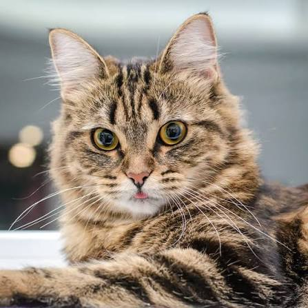
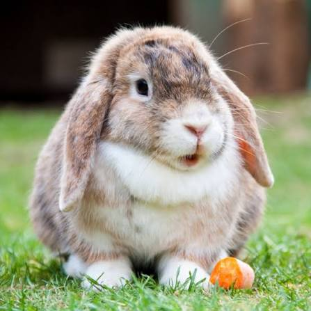
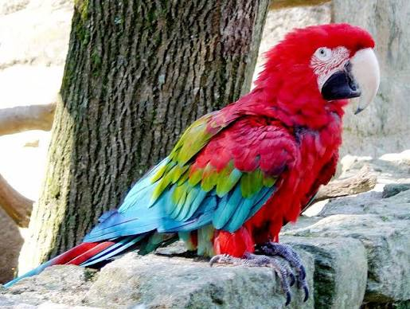

A háziállatok sok ember életének fontos részei. Társaságot, szeretetet és sok örömteli pillanatot adhatnak. Az állattartás azonban felelősséggel is jár, hiszen minden állatnak szüksége van megfelelő táplálékra, gondozásra, biztonságos környezetre és szeretetre.
A kutya hűséges és társaságkedvelő háziállat.

A macska kíváncsi, játékos és önálló állat.

A nyúl érzékeny és nyugodt háziállat.

A papagáj színes, intelligens és társaságkedvelő madár.
| Állat | Állat típusa | Jellemző |
|---|---|---|
| Kutya | Emlős | Hűséges, játékos |
| Macska | Emlős | Kíváncsi, önálló |
| Nyúl | Emlős | Nyugodt, érzékeny |
| Papagáj | Madár | Intelligens, társaságkedvelő |